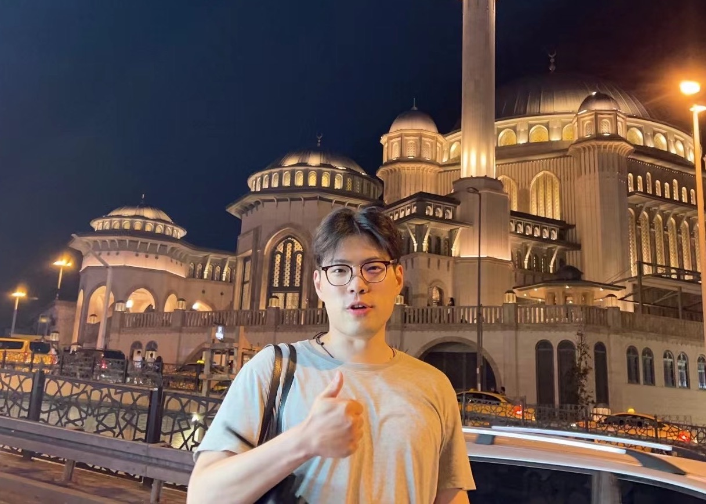

Weijun Wang (王蔚峻)
|  | Postdoctoral Fellow Find me at |


Research Interests
My current research interest is System Optimization on Large Model Serving and Algorithm-system Co-design on Embodied AI.
Research Interests
Mobile Edge Compute: TMC25, TMC24, TMC23, TMC22, TMC21, TMC20, TON20, INFOCOM19, IWQoS25, IWQoS22, SECON22, SECON19
System-optimized Video Applications: NSDI25, TON25, TON24, TON23, INFOCOM24, INFOCOM23, INFOCOM22
Efficient Large Model Serving: EuroSys25, ACL24, TC25, arXiv25, arXiv25, arXiv24
Embodied AI: arXiv25, MOBICOM25Demo
Recent Publications (full list)
“Empower Vision Applications with LoRA LMM”, EuroSys 2025.
“Region-based Content Enhancement for Efficient Video Analytics at the Edge”, NSDI 2025.
“SwapMoE: Serving Off-the-shelf MoE-based Large Language Models with Tunable Memory Budget”, ACL 2024.
“Bi-level Bandwidth Coordination for Multiple Video Inference at the Edge”, ACM/IEEE TON 2025.
“Accelerated Neural Enhancement for Video Analytics with Video Quality Adaptation”, ACM/IEEE TON 2024.
“Personal LLM Agents: Insights and Survey about the Capability, Efficiency and Security”, arXiv, Jan 2024. [机器之心] Star
News
12/2025. Our paper "Efficient LLM Edge Collaboration Deployment with LoRA" win the best student paper award at ICPADS'25! Thanks to all collaborators.
09/2025. BiSwift journal version was accepted by ACM/IEEE TON. Congratulations to Jinghan for her first top-journal paper!
05/2025. SwapMoE journal version was accepted by IEEE TC. Congratulations to Rui!
04/2025. WiPlan was accepted by IEEE/ACM IWQoS. Congratulations to Yanlong!
02/2025. PEACE was accepted by IEEE TMC. Thanks to all collaborators!
01/2025. VaLoRA was accepted by EuroSys'25 (Fall round). Congratulations to Mi for his first top-conference paper!
11/2024. My proposal on “Research on Efficient Inference of Vision-Large-Model” is approved and funded by China Postdoctoral Science Foundation. Welcome to contact me if you are interested.
08/2024. My proposal on “Key Technologies for Large-Model-powered Edge Video Analysis” is approved and funded by NSFC. Welcome to contact me if you are interested! We are recruiting research interns of both undergraduates and graduates.
07/2024. RegenHance was accepted by NSDI'25 (Spring round). Many thanks to Prof. Yunxin Liu's insightful comments!
05/2024. SwapMoE was accepted by ACL'24. Congratulations to Rui!
02/2024. AccDecoder journal version was accepted by ACM/IEEE TON. Congratulations to Mi for his first top-journal paper!
DUET journal version was accepted by IEEE TMC. Congratulations to Lihao for his first top-journal paper!
01/2024. Our PERSONAL LLM AGENTS - Survey has been published and reported by one of the most popular WeChat Official Accounts 机器之心!! Check out it and Repo for more details. Star
12/2023. BiSwift was accepted to IEEE INFOCOM'24. Congratulations to Lin for her first top-conference paper!
11/2023. DARPA journal version was accepted by IEEE TMC. Thanks to all collaborators!
07/2023. Happy to be elected to the Postdoctoral Talent Introduction Program from the Ministry of Education, China (国家博士后海外引才专项) and the Shuimu Tsinghua Scholar Program from Tsinghua University (水木学者). Many thanks to my Postdoc hoster Prof. Yunxin Liu.
04/2023. VSiM journal version was accepted to TON. Many thanks to our collaborators Yali, Yuhan, Sripriya, Kai, and Prof. Xiaoming Fu!
03/2023. I finished my short-term Postdoc period in Göttingen and will join in Tsinghua as a Postdoctoral Fellow hosted by Prof. Yunxin Liu on June! Many thanks for my hoster Prof. Xiaoming Fu at Göttingen, really enjoy the research time there.